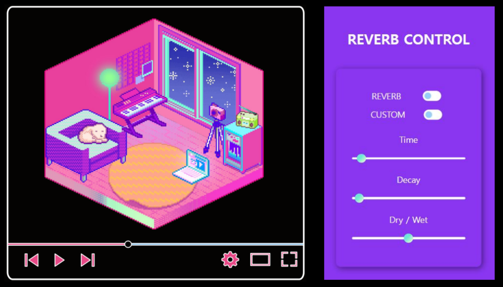

Flask
AI 모델과의 원활한 연동을 위해 파이썬 프레임워크인 Flask를
채택하여 서버-모델 간 데이터 흐름 최적화
Groove2Groove (AI)
기존 MIDI 파일에 Lo-Fi 특유의 감성적인 스타일을 입힌 새로운
결과물을 생성함으로써 독창적인 가치 제공
사용자가 원하는 곡을 집중이나 취침에 적합한 Lo-Fi 음악으로
변환하여 실시간 재생 가능
JavaScript & Tone.js
Tone.js 등 Web Audio Framework를 활용하여 브라우저 환경에서 MIDI
데이터를 분석하고 실시간 오디오 이펙트 적용
Github, Notion 및 간트차트를 활용한 협업 프로세스 리딩
MIDI 데이터 분석 및 조작 로직 구현, 사용자 맞춤 오디오 이펙트 시스템 구축
Groove2Groove 딥러닝 모델을 API 엔드포인트로 서버와 연동
뽀모도로 타이머, TODO 리스트, 백색소음 등 사용자 편의 기능 구현